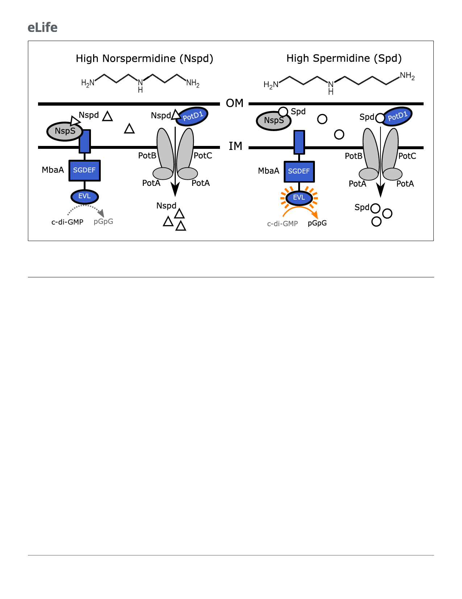

Research article
Microbiology and Infectious Disease
Figure 1. Polyamine sensing in V. cholerae. Schematic showing the previously proposed polyamine detection and import mechanisms in V. cholerae.
Norspermidine (Nspd, triangles) promotes biofilm formation and spermidine (Spd, circles) represses biofilm formation. The primarily eukaryotic
polyamine spermine (not pictured) also signals through the NspS-MbaA pathway. See text for details. OM: outer membrane; IM: inner membrane.
As mentioned above, information contained in extracellular polyamines is transduced internally
by MbaA, which is embedded in the inner membrane. MbaA contains a periplasmic domain that
interacts with the periplasmic binding protein NspS. nspS is located immediately upstream of mbaA
in the chromosome (Cockerell et al., 2014; Karatan et al., 2005; Young et al., 2021). MbaA also
possesses cytoplasmic GGDEF (SGDEF in MbaA) and EAL (EVL in MbaA) domains (Figure 1).
Genetic evidence suggests that when NspS is bound to norspermidine, the complex associates with
MbaA and biofilm formation is promoted (Cockerell et al., 2014). Specifically, NspS interaction with
MbaA inhibits MbaA phosphodiesterase activity, leading to increased c-di-GMP levels, and in turn,
elevated biofilm formation (Figure 1, left panel) (Cockerell et al., 2014). It is proposed that Apo-
NspS and NspS bound to spermidine or spermine do not bind to MbaA, and thus, under this condi-
tion, biofilm formation is reduced (Cockerell et al., 2014; Sobe et al., 2017). In this case, MbaA
phosphodiesterase activity is not inhibited, which leads to decreased c-di-GMP levels and repression
of biofilm formation (Figure 1, right panel). Currently, it is not known whether or not MbaA has
diguanylate cyclase activity. The purified MbaA cytoplasmic domain functions as a phosphodiester-
ase in vitro (Cockerell et al., 2014).
In a proposed second regulatory mechanism, norspermidine and spermidine are thought to con-
trol biofilm formation via import through the inner membrane ABC transporter, PotABCD1
(McGinnis et al., 2009). Following internalization, via an undefined cytoplasmic mechanism, poly-
amines are proposed to modulate biofilm formation (Figure 1; McGinnis et al., 2009). This hypothe-
sis was based on the finding that elimination of PotD1, which is required for import of
norspermidine and spermidine, resulted in elevated biofilm formation. Importantly, the studies
reporting the MbaA and PotD1 findings used quorum-sensing-deficient V. cholerae strains
(Joelsson et al., 2006) that likely cannot disperse from biofilms. Furthermore, the end-point biofilm
assays used could not differentiate between enhanced biofilm formation and the failure to disperse.
Here, we combine real-time biofilm lifecycle measurements, mutagenesis, a reporter of cyto-
plasmic c-di-GMP levels, and measurements of intra- and extracellular polyamine concentrations to
define the roles that norspermidine and spermidine play in controlling the V. cholerae biofilm life-
cycle. In wildtype V. cholerae, exogenous norspermidine and spermidine inversely alter cytoplasmic
3 of 20